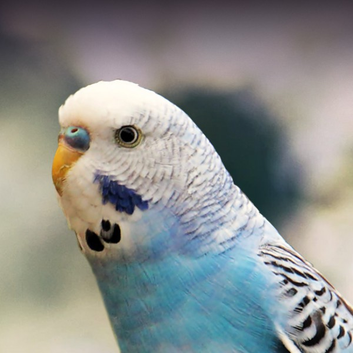
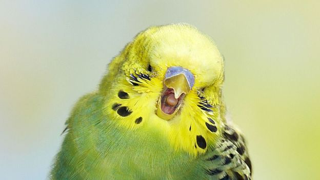
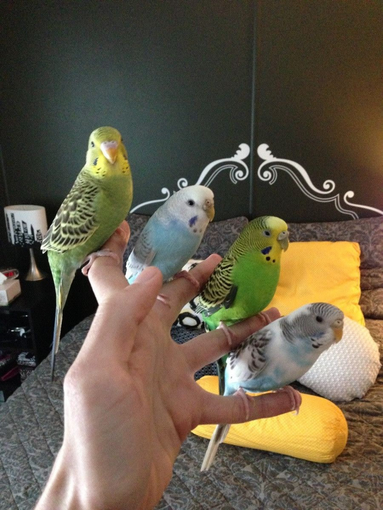

If you are considering adopting a parakeet or have recently adopted one, have
questions,
need supplies, or just want to share your experiences, welcome home.
This page is a hobby site and is not meant to take the place of
veterinarian expertise. All birds, if appearing ill, should be checked out by an avian vet as
soon as
possible.

The budgie, one of the smallest of the parrot species, occupies a big spot in the hearts of bird
lovers
all over the world. They are the birds you are most likely to see in pet stores making them the
most
commonly kept parrot in captivity.
They are colorful, friendly and quiet enough to make great apartment birds. Their cages do not
take up the
entire living room or empty out the savings account. For many people, a budgie was their first
bird, and
perhaps the one responsible for their life-long love affair with all parrot species.
Budgies have gained much notoriety for their accomplishments. The 1995 Guinness Book Of World
Records
documents Puck, a tiny blue budgie, with the largest parrot vocabulary on record with 1,728
words and
phrases spoken. It is a title most parrot aficionados would have assumed belonged to the African
grey.

Why Budgies NEED to Be Trained
Budgies need to be trained because they are very adept fliers. While they
aren’t
capable of landing a bite that will send you to the hospital for stitches, nor are they loud
enough to
damage your hearing (although for what they lack in volume they can more than make up for in
persistence),
your bird does have one huge advantage over you: it can fly!
They have the speed and maneuverability that is to be expected for a bird of their size, and
they are
natural masters at evading human hands. Even with the best of intentions, our huge hands “snatch
up” little
birds to take them out of the cage against their will or to put them back in before they are
ready to go.
So what do you suppose happens when you have a budgie with advanced flight skills that is afraid
your hands?
If you guessed that you would spend the next three hours trying to corner and capture your bird
to get it
back in the cage, you are correct.
This misadventure will give your tiny bird even more reason to fear your big hands!